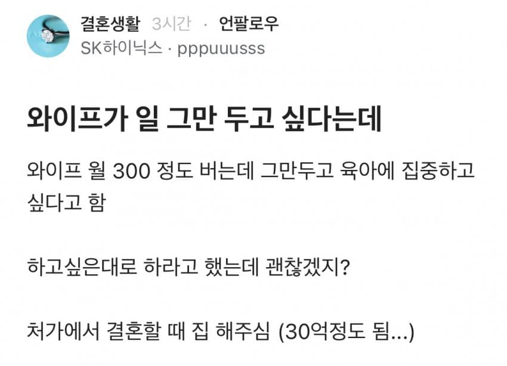

육아도 하이닉스 형이 해야할거 가틈 ㄹㅇ

육아도 하이닉스 형이 해야할거 가틈 ㄹㅇ
그 정도면 아가리하고 돈이나 벌어
자랑하고 싶어가 어째 살꼬
돈벌고 육아살림다해 여보가 집안의 기둥이야
역시 남자라서 그런지 자랑이 좀 서투네
와이프 똥도 저놈이 닦아야 함
혀로
비켜 내가먼저
어그로 끌려면 30억을 본문에 쓰지 않았어야지 하수네
지랄하고있네 씨발새끼가
수준이 좀 낮은데
성별바뀐글엔 여자들이 돈많으면 장땡이냐고 달있을텐데..
쓰레드에 저 글 올라온거보니까 다 남자 욕하고있더라
얌마 ! 30억 공동명의 해주셧으면 임마!
공동명의 얘기는 없는데
어차피 5년 넘어가면 거의 공동명의임 ㅋㅋㅋㅋㅋ
기둥서방해야제
출산도 남편이 대신 해야할 것 같은데...
비틱ㅋㅋ